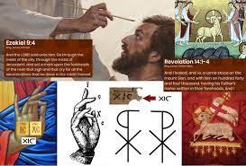
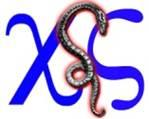
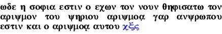
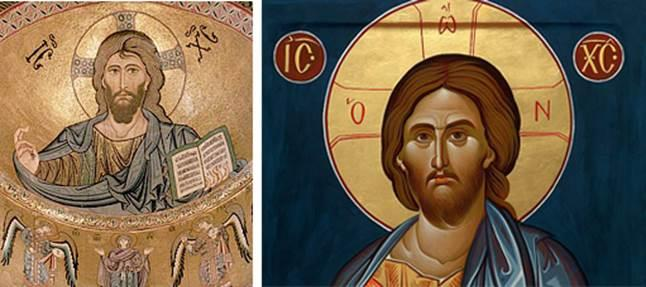
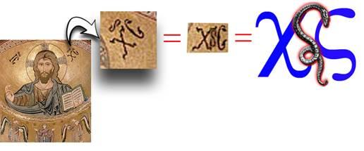

Chazon/Revelation 19:10“For it is the Spirit of prophecy who bears testimony to Yahushua.”
The Messiah is defined by The Torah and the Prophets of יהוה. Yahushua fulfillled in great detail over 300 Tanach [Old Testament] prophecies concerning the Messiah. BUT some will say so did “Jesus”! This is because the “false image Jesus” is built on the life of the true Messiah Yahushua. The TRUE Messiah must fulfill EVERY prophecy spoken in The Torah/Prophets not just 90% of them. If he fails in even 1, he is not The Messiah! So, let's take a critical look at the difference between Jesus and Yahushua.
Failure of “Jesus” to fulfill Prophecy of the Messiah which is the witness of the true Messiah:
1. Jesus H. Christ did not come in the name of יהוה. This image and name is built upon 3 pagan gods Hesus, Horus, and Krishna. Yahushua came in the proper name of “יהוה is our Savoir”.
2. Jesus failed to fulfill the sign of Jonah which is 3 days and 3 nights in the grave. Jesus was in the grave 1.5 days Friday night to Sunday morning. Yahushua fulfillled this prophecy being in the grave Wednesday evening through Saturday evening.
3. Jesus failed to fulfill The Passover. He died on Good Friday. He failed to fulfill The Shabbat by being resurrected on Sunday he does not have יהוה's witness. Yahushua was resurrected as “Lord/King of the Shabbat being resurrected King on The Shabbat.
4. Jesus abolished The Law. Yahushua did not. Yahushua fulfillled the prophecy of Mosheh that The Messiah would be the greatest prophet of all and properly teach The Law.
5. Jesus does not represent The Sign of the Kingdom of יהוה which is The Shabbat, he represents the sign of The Kingdom of Babylon… Sun worship on Sunday. Yahushua kept the 7th Day Shabbat of his Father. He is the Master of the Shabbat as he was raised on the end of Shabbat, just before the 1st day started.
6. Jesus does not represent the Seal on the forehead of the sons of יהוה which is The Shema. Jesus represents the Babylonian Seal which is The Trinity. Yahushua said: Mat 22:36 “Teacher, which is the great command in the Torah?” 37 And יהושע said to him, “ ‘You shall love יהוה your Elohim with all your heart, and with all your being, and with all your mind.’” Dev_6:5. Quoting the Shema
7. Jesus does not represent the proper sacrifice of a Lamb on Passover. He represents the abomination of a Pig on the Altar of יהוה that destroys those who put their faith in him… i.e. Easter the sacrifice of Babylon. Yahushua is the Passover Lamb.
8. Jesus came for the lost. Yahushua came for the lost sheep of Yisra’el, the 10 lost tribes.
9. Jesus nailed the commandments on the cross. Yahushua nailed the debt certificate against us on the stake.
10. Jesus fulfilled the Law so we don’t have to keep it. Yahushua fulfilled the law by showing us how to keep the Law.
11. Jesus replaced Yisra’el with the Church. Yahushua relaced nothing, including Yisra’el.
12. Jesus taught against the Law of Mosheh. Yahushua taught the Law of Mosheh is about him.
13. Jesus chose Gentiles and rejected Yisra’el. Yahushua grafted gentiles into Yisra’el.
14. No one will know when he comes back. Yahushua will return at the appointed time with the Feast of Trumpets.
15.Jesus wants you to pray the sinner's prayer. Yahushua want you to become his disciple.
16. Jesus wants you to live a good life. Yahushua wants you to live a set-apart life.
17.Jesus observed Pagan feasts, e.g. Christmas, New Year, etc. Yahushua observed his Father’s Scriptural Feasts.
18. Jesus ate anything. Yahushua only ate kosher foods.
Not only does ”Jesus“ not fulfill all the prophecies, not only does he come in his own name and represent the sign/seal/sacrifice of the religion of Babylon, but the ”Christogram of Jesus“ the X and the XES and the ICS an IHS are all the very symbols of the false messiah revealed in Chazon/Revelation 13.
Chazon/Revelation 13 reveals the very monogram, Christogram, and Pictogram of Jesus H. Christ and identifies him by name as the false messiah.
Chazon/Revelation 13
And I saw a beast coming out of the sea … The dragon (serpent ) gave the beast (XS) his power and his throne and great authority.

Below is what Chazon/Revelation 13 looks like in the Greek language:

"Number in Scripture" - Dr E W Bullinger pg 49 Indeed the expression of this number, , consists of the initial and final letters of the word ΧΡΙΣΤΟS (Christos), Christ, the X and V, with the symbol of the serpent between them, X—x—V.. The middle letter represents the symbol of the serpent and is intimately connected with the ancient Egyptian Mysteries.
We see the Greek letters such as IC and XC (which is XS today) used as symbols for ‘Jesus Christ’ in painted mosaics the world over clearly identifying Jesus Christ as the beast John saw in Chazon/Revelation.

“IC XC” as written in the Hellenistic period is a Christogram, a monogram of “Jesus Christ”. When Jesus Christ is written in Greek it looks like this: ΙΗΣΟΥΣ ΧΡΙΣΤΟΣ. If we take the first and last letters of ΙΗΣΟΥΣ (“Jesus”) and ΧΡΙΣΤΟΣ (“Christ”) we are left with: ΙΣ ΧΣ. Today that would read IS XS.

These mosaics of Jesus Christ have a serpent symbol above the IC XC (which today would be IS XS). If you move that serpent symbol into the monogram above it, you have the exact symbol Yochanan/John wrote in Chazon/Revelation 13:18. Remember the Greek letter Sigma Σ at the time this mosaic was painted was transliterated as a C. Today the Sigma is transliterated as an S.
The ”x“ or cross on the forehead is identified as the mark of the beast representing the Trinity.

So while ”Jesus" might fulfill most of the prophecies in the Tanach [OT] because he is based on the life of Yahushua [he is an IMAGE of Yahushua]… he also fulfills every prophecy of the false messiah and since he fails to meet many of the prophecies of the true Messiah and represents the beast of Babylon instead.